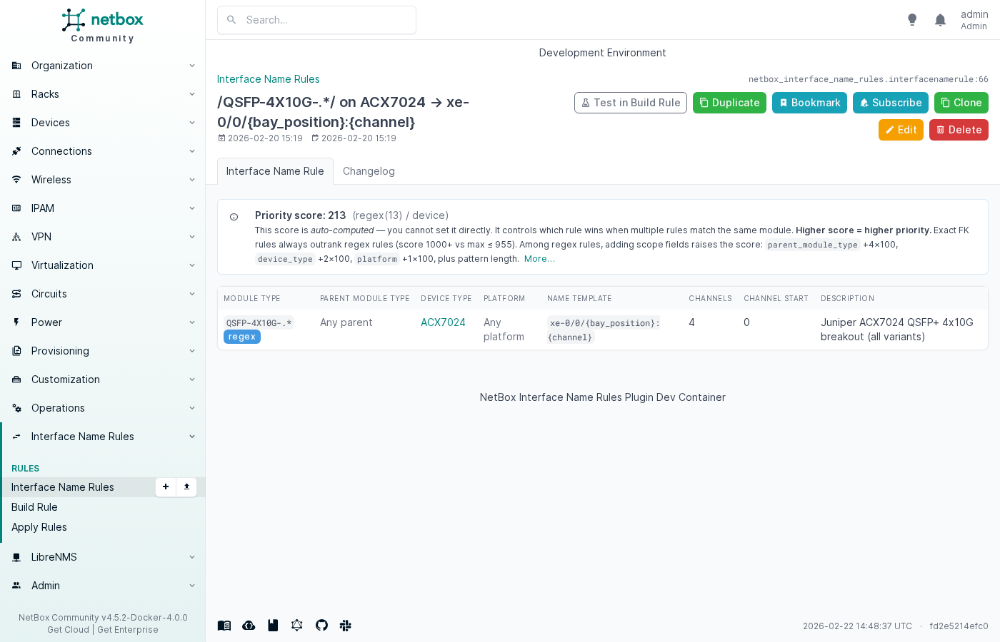
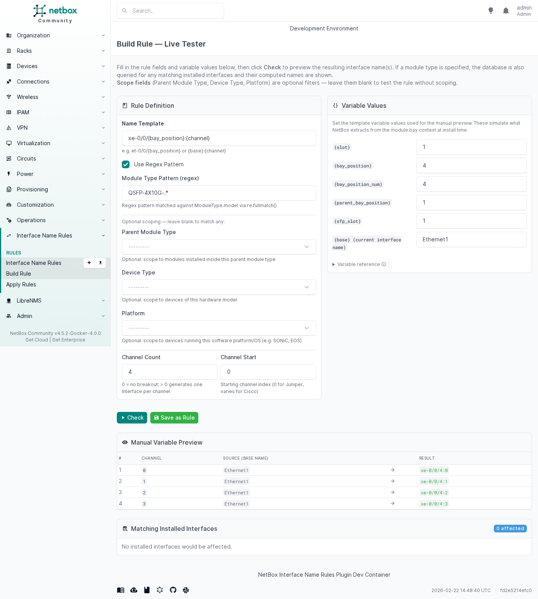
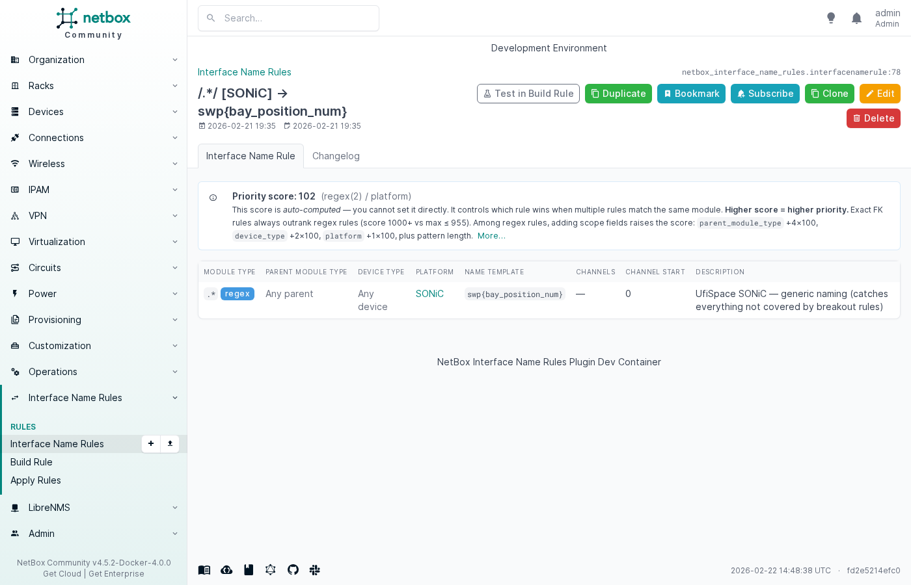
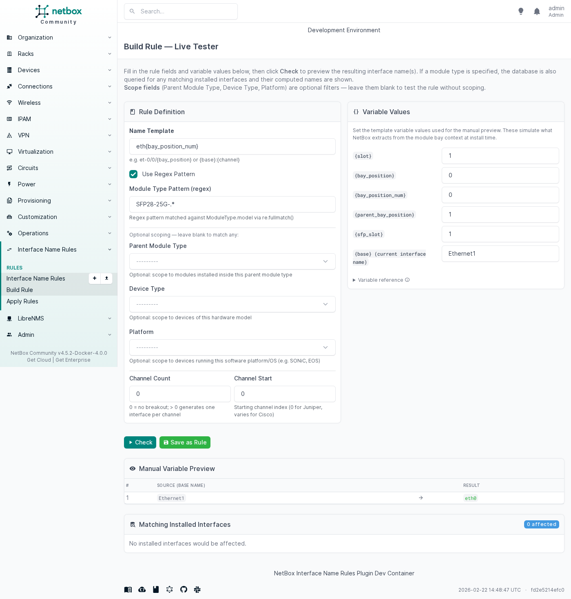
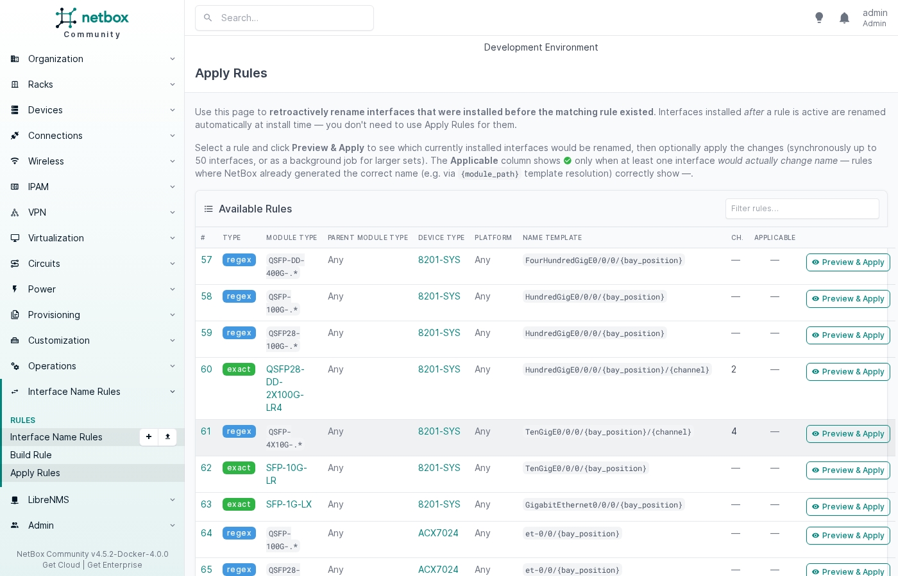
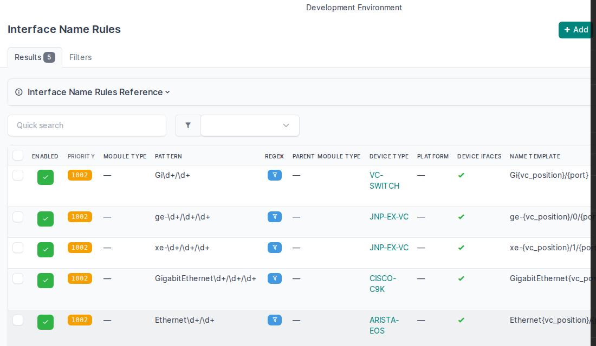
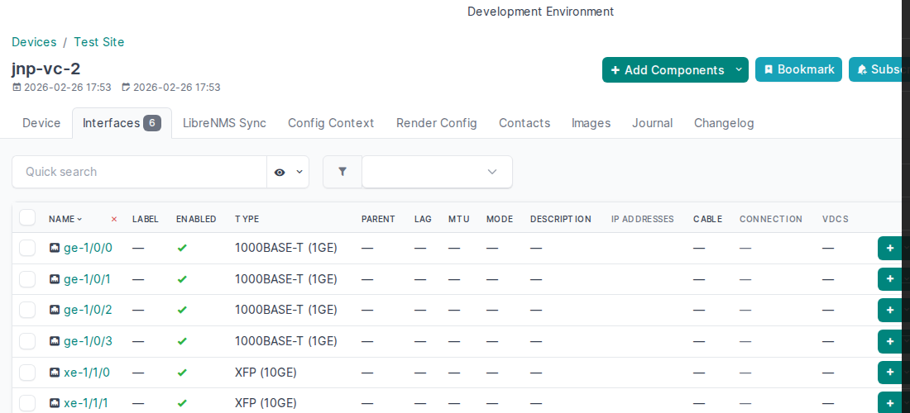
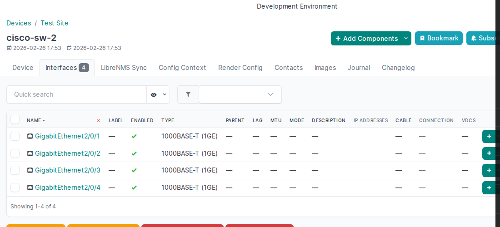
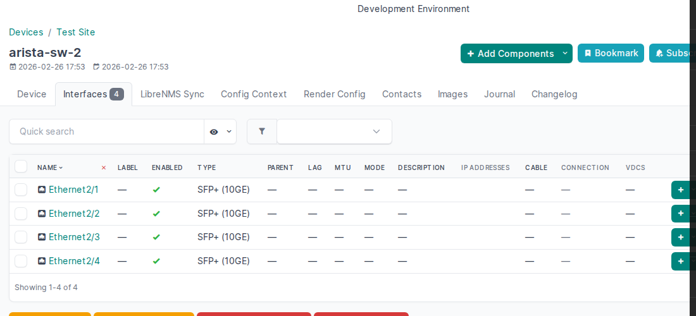

Examples
This page shows real-world rules for common vendors and use cases. All YAML snippets can be imported via Interface Name Rules → Import.
Juniper (ge / xe / et)
Juniper uses a three-tier interface naming scheme where the prefix encodes
the speed: ge- (1G), xe- (10G), et- (100G / 400G). The suffix follows
the FPC/PIC/port convention — for pizza-box ACX devices this simplifies to
0/0/{port}.
Rule overview for ACX7024
| Module type pattern | Name template | Channels | Result |
|---|---|---|---|
QSFP-DD-400G-.* |
et-0/0/{bay_position} |
— | et-0/0/4 |
QSFP-100G-.* |
et-0/0/{bay_position} |
— | et-0/0/7 |
QSFP28-100G-.* |
et-0/0/{bay_position} |
— | et-0/0/2 |
QSFP-4X10G-.* |
xe-0/0/{bay_position}:{channel} |
4 (start 0) | xe-0/0/4:0 … xe-0/0/4:3 |
QSFP28-DD-.* |
et-0/0/{bay_position}:{channel} |
2 (start 0) | et-0/0/3:0, et-0/0/3:1 |
SFP-10G-LR (exact) |
xe-0/0/{bay_position} |
— | xe-0/0/12 |
SFP-1G-.* |
ge-0/0/{bay_position} |
— | ge-0/0/0 |
YAML (excerpt from contrib/juniper.yaml)
# 100G QSFP28 (all variants) → et-0/0/X
- module_type_pattern: "QSFP-100G-.*"
module_type_is_regex: true
device_type: ACX7024
name_template: "et-0/0/{bay_position}"
description: "Juniper ACX7024 100GE QSFP28 naming (all variants)"
# 10G SFP+ (exact FK match) → xe-0/0/X
- module_type: SFP-10G-LR
device_type: ACX7024
name_template: "xe-0/0/{bay_position}"
description: "Juniper ACX7024 10GE SFP+ naming"
# 1G SFP (regex) → ge-0/0/X
- module_type_pattern: "SFP-1G-.*"
module_type_is_regex: true
device_type: ACX7024
name_template: "ge-0/0/{bay_position}"
description: "Juniper ACX7024 1GE SFP naming (all variants)"
Rule priority tip: The exact FK rule for SFP-10G-LR automatically
outranks any SFP-10G-.* regex rule at the same scope (score ≥ 1000 vs
score ≤ 955). You don't need to remove regex rules to avoid conflicts — the
exact FK rule always wins.
Rule detail — Juniper ACX7024 QSFP+ 4×10G breakout
The rule detail page shows the auto-computed priority score and a
human-readable label (e.g. regex(13) / device):

Breakout / channel interfaces
When a high-density transceiver (QSFP+, QSFP28, QSFP-DD) is split into
multiple lower-speed lanes, each lane needs its own NetBox interface. Set
channel_count > 0 and the plugin creates one interface per channel on
module install.
Build Rule — Juniper 4×10G breakout (QSFP+ → xe-0/0/4:0 … :3)
Fill in the Build Rule tester to preview results before saving:

The Manual Variable Preview table shows each channel's computed name
(xe-0/0/4:0, xe-0/0/4:1, xe-0/0/4:2, xe-0/0/4:3) before you
save the rule.
YAML — common breakout rules
# QSFP+ 4×10G → xe-0/0/X:0 … :3 (Juniper ACX)
- module_type_pattern: "QSFP-4X10G-.*"
module_type_is_regex: true
device_type: ACX7024
name_template: "xe-0/0/{bay_position}:{channel}"
channel_count: 4
channel_start: 0
description: "Juniper ACX7024 QSFP+ 4x10G breakout (all variants)"
# QSFP28-DD 2×100G → et-0/0/X:0 … :1 (Juniper ACX)
- module_type_pattern: "QSFP28-DD-.*"
module_type_is_regex: true
device_type: ACX7024
name_template: "et-0/0/{bay_position}:{channel}"
channel_count: 2
channel_start: 0
description: "Juniper ACX7024 QSFP28-DD 2x100G breakout"
# QSFP-DD 400G → 4×100G breakout (SONiC swp notation)
- module_type_pattern: "QSFP-DD-400G-.*"
module_type_is_regex: true
platform: SONiC
name_template: "swp{bay_position_num}s{channel}"
channel_count: 4
channel_start: 0
description: "UfiSpace SONiC — QSFP-DD 400G 4×100G breakout (swp5s0..swp5s3)"
# QSFP-DD 2×100G (Cisco IOS-XR)
- module_type_pattern: "QSFP28-DD-.*"
module_type_is_regex: true
device_type: 8201-SYS
name_template: "HundredGigE0/0/0/{bay_position}/{channel}"
channel_count: 2
channel_start: 0
description: "Cisco 8201-SYS QSFP28-DD 2x100G breakout"
Partial breakout repair
If a device was provisioned partially (e.g. only 2 of 4 channels were created manually), run Apply Rules → Preview & Apply for the matching rule. The engine detects the missing channels and creates only those — existing interfaces are left unchanged.
Build Rule — SONiC QSFP-DD 4×100G breakout
SONiC / UfiSpace whitebox switches
UfiSpace whitebox switches (S9610-36D, S9610-46DX, S9700-53DX, …) run SONiC
and use the swpX naming convention. Breakout ports use swpXsY
(0-based channel index).
See contrib/ufispace.yaml for platform-scoped rules (requires a "SONiC"
Platform object in NetBox) and contrib/ufispace-device-type.yaml for
device-type-scoped rules (no Platform required). Load only one of the two
files to avoid ambiguity.
Rule detail — SONiC platform-scoped catch-all

Linux servers
Linux servers with pluggable SFP/QSFP ports benefit from this plugin when you track the physical optics in NetBox module bays. The interface name is determined by the host's naming scheme, not the transceiver type.
Naming conventions
| Scheme | Example | When to use |
|---|---|---|
| Traditional | eth0, eth1 |
Containers, VMs, hosts with net.ifnames=0 |
| systemd predictable | ens1f0, ens1f1 |
Bare-metal servers with PCI slot-based names |
| systemd onboard | eno1, eno2 |
Motherboard/onboard NICs |
| Mellanox sub-port | eth0d1, eth0d2 |
QSFP28 hardware breakout (mlx5 driver) |
| Cumulus / DENT | swp1, swp2 |
Linux NOS on whitebox switches |
Build Rule — Linux traditional naming (eth{bay_position_num})

YAML (from contrib/linux.yaml)
# Traditional naming: eth0, eth1, ... (VMs, containers, legacy bare-metal)
- module_type_pattern: "SFP28-25G-.*"
module_type_is_regex: true
name_template: "eth{bay_position_num}"
description: "Linux server — SFP28 25G traditional naming (eth0, eth1, ...)"
# systemd predictable: ens{slot}f{port} (bare-metal with udev slot names)
# {slot} = top-level module bay position (NIC card slot number)
# {bay_position_num} = port index within the NIC
- module_type_pattern: "SFP28-25G-.*"
module_type_is_regex: true
name_template: "ens{slot}f{bay_position_num}"
description: "Linux server — SFP28 25G systemd predictable naming (ens1f0, ens1f1, ...)"
# Mellanox QSFP28 hardware breakout → 4×25G sub-ports (eth0d1 .. eth0d4)
- module_type_pattern: "QSFP-100G-.*"
module_type_is_regex: true
name_template: "eth{bay_position_num}d{channel}"
channel_count: 4
channel_start: 1
description: "Linux server — QSFP28 4×25G breakout, Mellanox-style (eth0d1..eth0d4)"
Scope your rules
Linux naming is highly environment-specific. Add a device_type scope to
restrict each rule to the specific server model so rules for different hosts
don't collide. See contrib/linux.yaml for annotated options.
Converter offset (CVR-X2-SFP)
A media converter (X2-to-SFP adapter) installs an SFP module inside an X2 port. The resulting Cisco IOS port number uses an arithmetic offset based on the parent bay position.
# SFP-1G-T in CVR-X2-SFP → GigabitEthernetSLOT/OFFSET
# Slot 3, parent bay 2, SFP slot 1 → GigabitEthernet3/11
- module_type: SFP-1G-T
parent_module_type: CVR-X2-SFP
name_template: "GigabitEthernet{slot}/{8 + ({parent_bay_position} - 1) * 2 + {sfp_slot}}"
description: "SFP-1G-T in CVR-X2-SFP: offset port numbering"
The arithmetic expression {8 + ({parent_bay_position} - 1) * 2 + {sfp_slot}}
is evaluated at rename time using a safe AST-based evaluator (no eval()).
Apply Rules — batch rename
The Apply Rules page shows all rules with a live Applicable indicator (✓ = at least one installed interface would be renamed). Click Preview & Apply to inspect affected interfaces before committing.

Virtual Chassis port renaming
When multiple devices form a Virtual Chassis (stack), each member's interfaces need to reflect its position in the chassis. The plugin fires apply_device_interface_rules() on post_save of dcim.Device whenever the VC position changes, renaming all native device-type interfaces automatically.
Enable Applies to Device Interfaces on the rule. The Module Type Pattern field acts as a regex filter on interface names (not a module type selector) — the REGEX column shows a  filter icon instead of a boolean.
filter icon instead of a boolean.
Device-level rules list (filtered to VC rules)

Juniper EX Virtual Chassis
Juniper VCs use 0-based member IDs. Interfaces follow the {prefix}-{member}/0/{port} scheme.
| Pattern | Name template | Member 0 result | Member 1 result |
|---|---|---|---|
ge-\d+/\d+/\d+ |
ge-{vc_position}/0/{port} |
ge-0/0/0 |
ge-1/0/0 |
xe-\d+/\d+/\d+ |
xe-{vc_position}/1/{port} |
xe-0/1/0 |
xe-1/1/0 |
# Juniper EX — 1G access ports
- applies_to_device_interfaces: true
device_type: "JNP-EX-VC"
module_type_pattern: "ge-\\d+/\\d+/\\d+"
name_template: "ge-{vc_position}/0/{port}"
# Juniper EX — 10G uplinks
- applies_to_device_interfaces: true
device_type: "JNP-EX-VC"
module_type_pattern: "xe-\\d+/\\d+/\\d+"
name_template: "xe-{vc_position}/1/{port}"
jnp-vc-2 at VC position 1 — interfaces renamed ge-0/0/N → ge-1/0/N, xe-0/1/N → xe-1/1/N:

Cisco Catalyst 9000 Stack
Cisco stacks use 1-based member IDs. Templates create GigabitEthernet1/0/N; on joining the stack at position 2, ports become GigabitEthernet2/0/N.
- applies_to_device_interfaces: true
device_type: "CISCO-C9K"
module_type_pattern: "GigabitEthernet\\d+/\\d+/\\d+"
name_template: "GigabitEthernet{vc_position}/0/{port}"
cisco-sw-2 at VC position 2 — interfaces renamed GigabitEthernet1/0/N → GigabitEthernet2/0/N:

Arista EOS
Arista modular/multi-chassis naming uses Ethernet{slot}/{port}. The device type creates templates Ethernet1/1 … Ethernet1/N; at VC position 2 they become Ethernet2/1 … Ethernet2/N.
- applies_to_device_interfaces: true
device_type: "ARISTA-EOS"
module_type_pattern: "Ethernet\\d+/\\d+"
name_template: "Ethernet{vc_position}/{port}"
arista-sw-2 at VC position 2 — interfaces renamed Ethernet1/N → Ethernet2/N:

Re-apply after initial load
If devices were added to the VC before rules were loaded (e.g. during bulk provisioning), the signal fires before the rules exist. Force a re-apply with:
contrib/juniper.yaml— full Juniper rule setcontrib/ufispace.yaml— SONiC platform-scoped rulescontrib/linux.yaml— Linux server naming optionscontrib/converters.yaml— media converter offset rules- Template Variables — full variable reference
- Configuration — rule fields and priority scoring